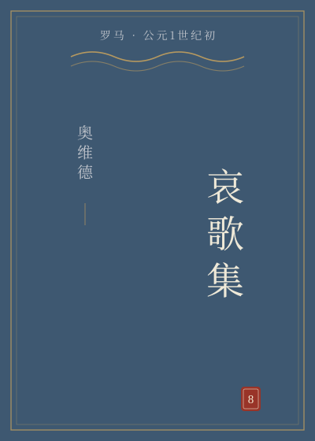
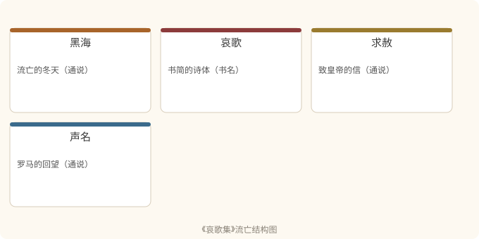

哀歌集
一、基本信息
| 作者 | 奥维德 |
|---|---|
| 成书/出版 | 公元8年后（作者页注记：Britannica——哀歌集（Tristia）、黑海书简——流放期作品——年份通说待核） Ovid — Encyclopaedia Britannica（百科全书） |
| 国别/地区 | 罗马 |
| 时代 | 古代 · 公元1世纪初 |
| 体裁 | 哀歌集 |
| 语言 | 拉丁语 |

《哀歌集》流亡结构图（主题·结构图）
二、创作背景
作者页注记：哀歌集（Tristia）、黑海书简——'流放期作品（Britannica）'。
Britannica：奥维德——公元8年被流放（作者页交叉——待核）。
题材（通说待核）：黑海托米斯的流亡诗——致奥古斯都、妻子与友人的书简。
三、内容脉络
（通说待核）五卷哀歌：流亡的冬天与'棺材'自比。
（通说待核）'黑海书简'（Epistulae ex Ponto）的续写。
四、主要人物表
| 人物 | 身份 | 说明 |
|---|---|---|
| 流亡者'我' | 被放逐的诗人 | （通说待核） |
五、主题与艺术特点
- 流亡与'消逝的声名'（通说待核）。
- '哀歌'体的晚年（B注记）。
- 对奥古斯都的求赦（通说待核）。
六、影响与评论
- Britannica：流放期作品（作者页注记）。
Ovid — Encyclopaedia Britannica（百科全书） - Britannica：《变形记》为代表作（作者页交叉）。
Ovid — Encyclopaedia Britannica（百科全书）
七、阅读建议
难点
- 哀歌格律。
- '卡门'（carmen et error）之谜（通说待核）。
- 《哀歌集》中译名（《悲歌》）待核。
- 拉丁文原版（公有领域）。
奥维德晚年；与《爱经》对照。
八、待核实
- 五卷结构核对（通说）。
- 'carmen et error'之谜待核。
- 公元8年流放细节待核。